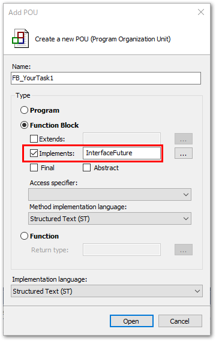
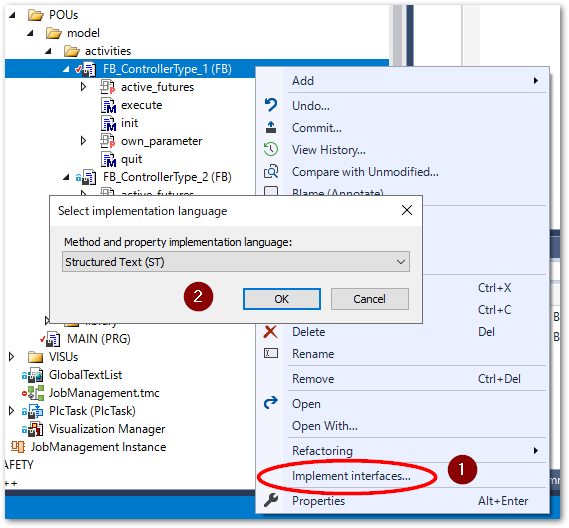

PLCプログラム解説#
このサンプルコードでは、タスクの生成から終了に対する統合的な状態管理機能と、その状態に応じたユーザ定義機能を提供します。これにより前節で説明したオブジェクト状態管理に関する問題を解決することができます。
また、さまざまなIOやハードウェアの制御機能を「タスク」として抽象化することができます。これによってソフトウェア機能の部品化を加速し、統一したインターフェースに基づいてトレーサビリティ、イベント管理など付帯機能などとの連携が容易になります。
タスクの構成とオブジェクトモデル#
フレームワークでは、図 2.1に示すタイミングチャートの単位をタスクとして制御できるようにします。タスクの本体はexecuting()で定義しますが、init()、quit()でその前後処理を定義します。

図 2.1 タスクの構成と外部とのハンドシェーク#
クラス図を図 2.2に示します。タスクの定義は、InterfaceFutureのインターフェースを実装することで行います。サンプルコードではPOUsのツリー以下にmodel/activitiesというサブフォルダを構成し、ここにさまざまな制御パターンを集めて定義しています。これを用いてMAINプログラムでジョブを組み立てます。（リスト 2.4）
このように、制御デザインパターンと、これを組み合わせたジョブを区別して管理することで拡張性に優れた制御プログラムや、制御デザインパターンのライブラリ化が容易になります。

図 2.2 JOB制御クラス図#
PROGRAM MAIN
VAR
_state :UINT;
fbTask1 : FB_ControllerType_1;
fbTask2 : FB_ControllerType_1;
fbTask3 : FB_ControllerType_2;
fbTask4 : FB_ControllerType_2;
fbTask5 : FB_ControllerType_1;
fbTask6 : FB_ControllerType_1;
component1_in : BOOL;
component1_out : BOOL;
component2_in : BOOL;
component2_out : BOOL;
component3_in : BOOL;
component3_out : BOOL;
component4_in : BOOL;
component4_out : BOOL;
serial_job1 : FB_SerialJobContainer;
serial_job2 : FB_SerialJobContainer;
serial_job3 : FB_SerialJobContainer;
pararel_job1 : FB_ParallelJobContainer;
pararel_job2 : FB_ParallelJobContainer;
executor: FB_Executor;
execution_step: UINT;
resume: BOOL;
abort: BOOL;
END_VAR
// HMIボタンによる処理中断
IF abort THEN
executor.abort();
END_IF
CASE _state OF
0:
// 固有パラメータ設
fbTask1.own_parameter := T#13S;
fbTask2.own_parameter := T#20S;
fbTask3.own_parameter := 2;
fbTask4.own_parameter := 2;
// 入出力変数の受け渡し
fbTask1(own_output := component1_out);
fbTask2(own_output := component2_out);
fbTask3(own_input := component3_in, own_output := component3_out);
fbTask4(own_input := component4_in, own_output := component4_out);
// futureオブジェクトの配置により実行順序を定義
pararel_job1.add_future(serial_job1);
pararel_job1.add_future(serial_job2);
serial_job1.add_future(fbTask1);
serial_job1.add_future(fbTask2);
serial_job2.add_future(fbTask3);
serial_job2.add_future(fbTask4);
pararel_job2.add_future(fbTask3); // 同時実行でなければ同じFutureオブジェクトを使いまわせる
pararel_job2.add_future(fbTask4);
serial_job3.add_future(pararel_job1);
serial_job3.add_future(pararel_job2);
executor.future := serial_job3;
_state := 1;
1:
// タスクスタート（wait_for_process か 処理中断再開でスタート）
IF (executor.current_state = E_FutureExecutionState.wait_for_process AND executor.ready) OR
(executor.current_state = E_FutureExecutionState.abort AND resume) THEN
executor.start();
END_IF
// ジョブ実行中execute()の常時実行
IF executor.execute() AND executor.nErrorID = 0 THEN
_state := 2;
END_IF
2:
// シーケンス初期化を行い、再度ジョブ実行（繰り返し処理）
executor.init();
_state := 1;
END_CASE
execution_step := executor.active_task_id;
resume := FALSE;
InterfaceFuture#
メソッド名 |
型 |
戻り値 |
説明 |
|---|---|---|---|
|
BOOL |
実行前に必要な変数やオブジェクトの初期化を行います。処理完了時にTRUEを返す必要があります。 |
|
|
BOOL |
タスク本体の処理を実装します。処理完了時にTRUEを返す必要があります。 |
|
|
BOOL |
実行後の変数やオブジェクトの後始末を行います。処理完了時にTRUEを返す必要があります。 |
|
|
BOOL |
中断処理が行われた際に実施する処理を実装します。処理完了時にTRUEを返す必要があります。 |
プロパティ名 |
型 |
方向 |
説明 |
|---|---|---|---|
nErrorID |
UDINT |
GET |
エラー発生時は0以外の値を返します。参照 |
active_futures |
UINT |
GET |
|
InterfaceFutureインターフェースの名前はFutureパターンから由来しています。複数の演算コアで並列処理を行うのではなく、単一の演算コア上にタスクを順次パイプライン実行していく仕組みにより、処理完了を待たされる（ブロックされる）ことなく処理を進めることができます。実際の演算は将来行われることからFutureパターンと呼ばれています。
このインターフェースにより実装したファンクションブロックをタスクとして、次節に示すFB_Executorで統一的に実行することが可能になります。
InterfaceContainer#
メソッド名 |
型 |
戻り値 |
説明 |
|---|---|---|---|
|
UINT |
登録されたFuture番号を返す |
ジョブコンテナにFutureを登録する。 |
|
BOOL |
コンテナの初期化完了でTRUEを返す |
add_futureで登録したFutureを全てクリアする。 |
get_future_statue |
E_FutureExecutionState |
引数で指定したFuture番号の現在の実行状態を返す |
指定したFuture番号の現在状態を調べる。 |
プロパティ名 |
型 |
方向 |
説明 |
|---|---|---|---|
active_futures |
UINT |
Get |
|
num_of_future |
UINT |
Get |
|
FB_Executor#
FB_Executorは、InterfaceFutureを実装したファンクションブロックを実行するファンクションブロックです。
メソッド名 |
型 |
戻り値 |
説明 |
|---|---|---|---|
|
BOOL |
初期化処理完了時にTRUEが返る |
タスクの処理を開始できる状態に初期化する。 |
|
BOOL |
タスク処理完了時にTRUEが返る |
|
|
BOOL |
中断処理完了時にTRUEが返る |
|
|
BOOL |
なし |
|
プロパティ名 |
型 |
方向 |
説明 |
|---|---|---|---|
nErrorID |
UDINT |
GET |
エラー発生時は0以外の値を返します。参照 |
active_task_id |
UINT |
GET |
|
current_state |
E_FutureExecutionState |
GET |
|
future |
InterfaceFuture |
SET |
実装したタスクをセットします。 |
done |
BOOL |
GET |
InterfaceFutureで実装した |
ready |
BOOL |
GET |
InterfaceFutureで実装した |
start()メソッドや、ready、doneプロパティはタスク同士を連続して実行する際、InterfaceFutureのinit()やquit()の処理によりサイクルの隙間が発生しないようにするトリガやイベントです。
ジョブコンテナ#
InterfaceFutureとInterfaceContainerを実装したファンクションブロックで、複数のFutureタスクをまとめて取り扱うコンテナオブジェクトです。
FB_ParallelJobContainer登録したFutureタスク全てを同時に実行します。（図 2.3）
FB_SerialJobContainer登録したFutureタスクを、登録した順に実行します。（図 2.4）

図 2.3 並行処理ジョブコンテナ（FB_ParallelJobContainerによるタスク配置）イメージ#

図 2.4 直列処理ジョブコンテナ（FB_SerialJobContainerによるJOB配置）イメージ#
FB_ParallelJobContainerやFB_SerialJobContainer内でタスク同士が同期的に連動するのはexecute()の前後のみです。init()はタスク開始時から全タスク同時に開始し、quit()はexecute()実行完了後すぐに実行されます。
また、FB_ParallelJobContainerとFB_SerialJobContainerもまたInterfaceFutureインターフェースを実装していますので、それ自体をFB_Executorに処理させることができます。これにより、並行処理と逐次処理を組み合わせた複雑なタスク実行が可能となっています。
Tip
このデータモデルは、コンテナと処理が親子関係を構成し、定義によってさまざまな枝葉モデルが構築可能です。このソフト実装のデザインパターンを、GoFのCompositeパターンと呼びます。
リスト 2.4のMAINプログラム例で作成したジョブのタイムチャートイメージを図 2.5に示します。枠囲い部分がジョブコンテナです。その中の線は個々のタスクです（図 2.2のConcreteActivityに該当するオブジェクト）。これらはFB_ParallelJobContainerやFB_SerialJobContainerと共に、InterfaceFutureを実装したものです。このインターフェースを使ってFB_Executorが処理を実行します。

図 2.5 ジョブコンテナを組み合わせたジョブイメージ#
実装手順#
本フレームワークを用いた開発手順についてご説明します。
ジョブコンテナに格納できるタスク数の設定#
FB_ParallelJobContainerやFB_SerialJobContainer内に配置可能なInterfaceFutureの配列数は、GVLs内のParameterFutureLibのライブラリパラメータMAX_TASK_NUMにて設定してください。
本フレームワークをライブラリとして活用される場合は、ライブラリパラメータの設定方法に示すとおり、ライブラリマネージャのライブラリ内のLibrary parametersタブを開いて設定してください。
インターフェース実装#
インターフェースの追加は、ファンクションブロックの追加時に次の通り指定します。

これにより追加されたファンクションブロックは次のとおりIMPLEMENTS InterfaceFutureが付加されたファンクションブロックが作成されます。
FUNCTION_BLOCK FB_YourTask1 IMPLEMENTS InterfaceFuture
VAR_INPUT
:
また、ライブラリを変更し、インターフェースに新たなメソッドやプロパティ定義を加えた場合は、次の操作にて実装ファンクションブロックに対して、不足分を反映することができます。
実装ファンクションブロックを選択してコンテキストメニューから
Implements Interfacesを選択する。メソッドで実装するIEC61131-3の言語を選択します。

注釈
Implements Interfacesメニューで自動反映される内容はメソッドやプロパティの新規追加のみです。実装済みのファンクションブロックのメソッドやプロパティについて行われた、インターフェースの変更や削除の内容は反映されませんのでご注意ください。
インターフェースと実装ファンクションブロックのメソッド、プロパティ、またその型や引数の仕様が異なると、ビルドに失敗します。ビルドエラーが出なくなるように手動で変更を反映してください。
init(), execute(), quit(), abort() メソッドの実装#
サンプルプログラムでは、model/activitiesフォルダ内にある各ファンクションブロックに該当する部分で、機能やコンポーネントに合わせた具体的なタスクを定義するファンクションブロックの書き方について説明します。
- 入出力変数は空にしておく
入出力変数はインターフェースにより定められていますので、加えることはできません。ファンクションブロックの入出力変数や、ファンクションブロック独自のプロパティを使って、外部とのデータアクセスを行ってください。
- 終了条件としてメソッドの戻り値を
TRUEにする FB_Executorファンクションブロックは
init(),execute(),quit(),abort()各メソッドを実行したあと、戻り値がTRUEとなる事でプログラムが進行します。かならず戻り値を設定してください。execute := <<終了条件>>;
ファンクションブロック内の変数や処理の初期化や中断の処理が不要な場合でも、以下の通り空の
init(),quit(),abort()を実装する必要があります。{warning 'add method implementation '} METHOD init : BOOL init := TRUE;
{warning 'add method implementation '} METHOD quit : BOOL quit := TRUE;
{warning 'add method implementation '} METHOD abort : BOOL abort := TRUE;
- 終了時にエラーが発生した場合は
nErrorIDプロパティを通して0以外の値を通知します init(),execute(),quit()の終了時のエラー状態は、nErrorIDプロパティにて通知してください。FB_Executorで実行した際、これらの処理が完了するとこの終了コードがFB_Executor.nErrorIDプロパティで取り出せます。また、0以外の値となった場合は、E_FutureExecutionState.abort状態となり処理中断状態となります。中断時に実行する処理内容は、abort()に定義してください。
I/O変数の受け渡し#
I/Oなど参照渡しする変数についてはファンクションブロックのVAR_IN_OUTを用いる方法が最もシンプルです。インターフェースなどを使う目的でプロパティで受け渡す場合は、次の方法があります。
ポインタ型の内部変数を用意
タスクのファンクションブロック内部ではポインタとして変数を定義し、プログラムロジックを記述します。ここでは、XPlanarのオブジェクト変数である
MC_PlanarMoverを外部から参照渡しする例でご説明します。VAR _fbMover : POINTER TO MC_PlanarMover; _cmdFB : POINTER TO MC_PlanarFeedback; END_VAR //直線運動 _fbMover^.MoveToPosition(_cmdFB^,stMoverPosition,fbDnyMove,0);
REFERENCE TO で参照渡しするメソッドやプロパティを実装する。
プロパティでセットする場合は、プロパティの型を
REFERENCE TO ****とし、内部変数には、ADR()関数でポインタにして渡す。これにより、外部の変数そのものをファンクションブロック内でメンバ変数として扱うことができます。PROPERTY fbMover : REFERENCE TO MC_PlanarMover SET: _fbMover := ADR(fbMover);
コンストラクタメソッドで受け渡す場合も同様に、リファレンスでコンストラクタ引数を設定し、ポインタで内部変数に渡します。
METHOD FB_init : BOOL VAR_INPUT bInitRetains : BOOL; // if TRUE, the retain variables are initialized (warm start / cold start) bInCopyCode : BOOL; // if TRUE, the instance afterwards gets moved into the copy code (online change) fbMover : REFERENCE TO MC_PlanarMover; END_VAR _fbMover := ADR(fbMover);
外部からは次の方法で参照渡しします。コンストラクタ引数の場合は、
()内の引数ですのでリファレンス変数でも:=代入演算子が用いられますが、プロパティセットの場合、REF=の演算子で参照代入する必要があります。（参照）PROGRAM MAIN VAR fbMover : MC_PlanarMover; // 例: XPlanarの可動子オブジェクト // InterfaceFutureを実装したタスクファンクションブロック fbTask : FB_AnyTask(fbMover := fbMover); // コンストラクタで受け渡す場合 END_VAR // Property SET メソッドで受け渡す場合は、`REF=`演算子で参照代入する必要があります fbTask.fbMover REF= fbMover;
上記の方法で、
AT %I*やAT %Q*などを付加した入出力変数なども参照渡ししてファンクションンブロック内でIO制御を行うことが可能になります。
メインプログラム実装#
メインプログラムでは、タスク（InterfaceFutureを実装したもの）、FB_executor、ジョブコンテナ（FB_ParallelJobContainer、FB_SerialJobContainer）の各インスタンスを定義します。
- ジョブにつき一つの
FB_executorのインスタンスを用意する ここでは、複数のタスクが組み合わされた一連の流れをジョブと呼びます。このジョブ毎に一つの
FB_executorインスタンスを用意してください。futureプロパティにて、タスクインスタンス、または、複数のタスクを束ねるジョブコンテナオブジェクトを関連付けます。- ジョブコンテナインスタンスのadd_task
FB_ParallelJobContainer、FB_SerialJobContainerそれぞれadd_task()を実施します。FB_SerialJobContainerでは、add_task()を実施した順番で処理が行われます。FB_Executor.execute()でジョブを実行し、タスク開時にFB_Executor.start()を呼び出すジョブ実行中は
FB_Executor.execute()を呼び出し続けてください。また、FB_Executor.readyがTRUEとなったら、FB_Executor.start()を呼び出してください。これによりタスク処理を開始します。また、処理中断からの再開時にも、
FB_Executor.start()を呼び出してください。中断前に実施していたInterfaceFutre.init(),InterfaceFuture.execute(),InterfaceFuture.quit()を再開実行します。注釈
FB_Executor.abort()や Futureの各処理でnErrorIDでエラー検出した場合、直前に行っていたinit(), execute(), quit()などのメソッドは中断されます。このためオブジェクトの変数状態は保持されます。これにより、例えばTONファンクションブロック等では、バックグラウンドで時間カウントアップを継続したままの状態で中断される事となり、次回再開時にはタイマ値がlimitに達した状態から処理が行われてしまいます。この対策として、サンプルコードでは
InterfaceFuture.abort()処理内にて、タイマ値の現在地を保存した上でタイマの計測停止を行います。また、次回処理再開時にはその残時間を改めてTONに設定しています。処理中断・再開処理にはこのような対策が必要となります。- 外部からの処理中断を行う
ボタン操作等で、実行中の処理を中断を行うには、
FB_Executor.abort()を実行してください。1度実行すれば内部で状態保持しますので、1サイクルのみ実行してください。- ジョブを最初からやりなおす場合は
FB_Executor.init()を実行する 実行済みのジョブの各オブジェクトは最終状態を保持したままとなっています。ジョブコンテナおよびそこに関連付けられたタスク全てを初期化するには、
FB_Executor.init()を実行します。また、処理中断となったあと、再開せずに初期状態に戻す場合も
FB_Executor.init()を実行してください。